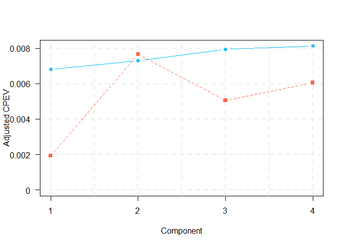

Overview
toscca is an R package to perform Thresholded Ordered Sparse Canonical Correlation Analysis (TOSCCA), descibed in (Senar N. et al, nd) for the analysis and integration of two datasets, at least one of which is high-dimensional. TOSCCA is an extension of the sparse CCA method based on soft-thresholding that produces near-orthogonal components, allows for browsing over various sparsity levels, and permutation-based hypothesis testing. Our soft-thresholding approach avoids tuning of a penalty parameter, which is computationally burdensome and may render unintelligible results. In addition, unlike alternative approaches, our method is less dependent on the initialisation.

Installation
You can install the development version of toscca from GitHub with:
# install.packages("devtools")
devtools::install_github("nuria-sv/toscca")Example
This is a basic example which shows you how to reproduce the analysis described in “A framework for interpretation and testing of sparse canonical correlations”.
Simulations
We simulate data for 3 underlying signals of different size on a high-dimensional setting. That is,
$$ \mathbf{X} \in \mathbb{R}^{n\times p} \quad \text{and} \quad \mathbf{Y}\in \mathbb{R}^{n\times q}, \\ \text{where } n = 100, \text{ } p = 2500 \text{ and } q = 500. $$
Canonical Correlation Analysis
We use the method described in the paper, Thresholded Ordered Sparse Canonical Correlation Analysis (TOSCCA), to uncover the underlying processes linking the data.
X = standardVar(X0)
Y = standardVar(Y0)
K = 4 # number of components to be estimated
nonz_x = rep(100, K) # number of nonzero variables for X
nonz_y = rep(100, K) # number of nonzero variables for Y
init = "uniform" # type of initialisation
cca_toscca = toscca(X, Y, nonz_x, nonz_y, K, init, combination = FALSE)
#>
#> __________________________________________
#> For component K = 1 :
#> | . . . . . . . . . . . . . . . . . . . . . . . . . . . . . . . . . . . . . . | 100 % Common convergence error: 0 & Iterations: 4
#> k-fold cv max. cancor
#> 0.9999466
#>
#> ........................................
#> # nonzero A: 100
#> # nonzero B: 100
#> ........................................
#>
#> __________________________________________
#> For component K = 2 :
#> | . . . . . . . . . . . . . . . . . . . . . . . . . . . . . . . . . . . . . . | 100 % Common convergence error: 0 & Iterations: 9
#> k-fold cv max. cancor
#> 0.9706823
#>
#> ........................................
#> # nonzero A: 100
#> # nonzero B: 100
#> ........................................
#>
#> __________________________________________
#> For component K = 3 :
#> | . . . . . . . . . . . . . . . . . . . . . . . . . . . . . . . . . . . . . . | 100 % Common convergence error: 0 & Iterations: 14
#> k-fold cv max. cancor
#> 0.9181017
#>
#> ........................................
#> # nonzero A: 100
#> # nonzero B: 100
#> ........................................
#>
#> __________________________________________
#> For component K = 4 :
#> | . . . . . . . . . . . . . . . . . . . . . . . . . . . . . . . . . . . . . . | 100 % Common convergence error: 0.01821 & Iterations: 21
#> k-fold cv max. cancor
#> 0.1844584
#>
#> ........................................
#> # nonzero A: 100
#> # nonzero B: 100
#> ........................................
cpev_toscca = sapply(1:K, function(k) cpev.fun(X, X%*%cca_toscca$alpha[,1:k]))
perm_toscca = perm.toscca(X, Y, nonz_x, nonz_y, K = K, init, draws = 100, cancor = cca_toscca$cancor)
#> Warning in e$fun(obj, substitute(ex), parent.frame(), e$data): already
#> exporting variable(s): K
We repeat the analysis using the Penalised Matrix Analysis approach from the PMA R-package. I have modified the main function to allow for different initialisations (such as random uniform and random normal) to compare to our models’ performance.
pma_lambda = PMA::CCA.permute(X, Y, typex = "standard", typez = "standard")
cca_pma = CCA_pma_random(X, Y, K = 4, typex = "standard", typez = "standard", start = "uniform",
penaltyx = pma_lambda$bestpenaltyx, pma_lambda$bestpenaltyz)
#> 123456789101112131415
#> 123456789101112131415
#> 123456789101112131415
#> 123456789101112131415
Then we run the algorithm several times with different sparsity levels for , keeping those for fixed. We observed the variables making up the signal are repeatedly selected with a higher frequency than the noise variables. The implication being that noise variable are selected once the signal has been retrieved.
#> nonzero_b must have length 1 or K.
#> nonzero_b must have length 1 or K.
#> nonzero_b must have length 1 or K.
#> nonzero_b must have length 1 or K.
#> nonzero_b must have length 1 or K.
#> nonzero_b must have length 1 or K.
#> nonzero_b must have length 1 or K.
#> nonzero_b must have length 1 or K.
Cummulative percentage of explained variance (CPEV) and correlation between components.
AS discussed in the paper, a common measure to evaluated whether or not to compute another component is the CPEV, as seen in the equation below. However, if the estimated canonical vectors are correlated, then the subsequent components are limited in the amount of new information they are bringing by adding one more of them.
We therefore scale the CPEV according to correlation between previous components. We refer to this as adjusted CPEV.
cpev_pma = sapply(1:K, function(k) cpev.fun(X, X%*%cca_pma$u[,1:k]))
auto_cor = data.frame(first_second = c(cor(cca_pma$u[,1] , cca_pma$u[,2]),
cor(cca_toscca$alpha[,1], cca_toscca$alpha[,2])),
first_third = c(cor(cca_pma$u[,1] , cca_pma$u[,3]),
cor(cca_toscca$alpha[,1], cca_toscca$alpha[,3])),
first_fourth = c(cor(cca_pma$u[,1] , cca_pma$u[,4]),
cor(cca_toscca$alpha[,1], cca_toscca$alpha[,4])),
second_third = c(cor(cca_pma$u[,2] , cca_pma$u[,3]),
cor(cca_toscca$alpha[,2], cca_toscca$alpha[,3])),
second_fourth = c(cor(cca_pma$u[,2] , cca_pma$u[,4]),
cor(cca_toscca$alpha[,2], cca_toscca$alpha[,4])),
third_fourth = c(cor(cca_pma$u[,3] , cca_pma$u[,4]),
cor(cca_toscca$alpha[,3], cca_toscca$alpha[,4]))
)
rownames(auto_cor) <- c("PMA", "TOSCCA")
adj_cpev_toscca = c(cpev_toscca[1],
sapply(2:K, function(k) cpev_toscca[k]*prod(1-abs(auto_cor[2,k-1:k]))))
adj_cpev_pma = c(cpev_pma[1],
sapply(2:K, function(k) cpev_pma[k]*prod(1-abs(auto_cor[1,k-1:k]))))
plot(t(auto_cor[2,]), type = "b", pch = 19, col = "deepskyblue", xlab = "Correlation to first component", ylab = "Autocorrelation", xaxt = "n", yaxt="n", ylim = c(-1,1), lty = 1)
axis(1, at=1:length(colnames(auto_cor)), lab=colnames(auto_cor), las=0, cex.axis = 0.7)
axis(2, at=pretty(c(-1,1)), lab=pretty(c(-1,1)), las=TRUE)
grid(nx = NULL, ny = NULL, lty = 2, col = alpha("lightgray", 0.4),lwd = 2)
points(t(auto_cor[1,]), type = "b", pch = 15, col = "tomato", lty = 2)
plot((adj_cpev_toscca), type = "b", pch = 19, col = "deepskyblue", xlab = "Component", ylab = "Adjusted CPEV", xaxt = "n", yaxt="n", ylim = c(0,max(max(adj_cpev_pma), max(adj_cpev_toscca))), lty = 1)
axis(1, at=1:K, lab=1:K, las=TRUE)
axis(2, at=pretty(c(0,max(max(adj_cpev_pma), max(adj_cpev_toscca)))), lab=pretty(c(0,max(max(adj_cpev_pma), max(adj_cpev_toscca)))), las=TRUE)
grid(nx = NULL, ny = NULL, lty = 2, col = alpha("lightgray", 0.4),lwd = 2)
points((adj_cpev_pma), type = "b", pch = 15, col = "tomato", lty = 2)
kable(
auto_cor,
col.names = colnames(auto_cor),
# row.names = row.names(auto_cor),
# digits = 2,
caption = "Autocorrelation between components"
)| first_second | first_third | first_fourth | second_third | second_fourth | third_fourth | |
|---|---|---|---|---|---|---|
| PMA | -0.0101010 | 0.7069568 | -0.2151539 | 0.0346192 | 0.0100014 | -0.3398326 |
| TOSCCA | -0.0131597 | -0.0130300 | -0.0022242 | -0.0063520 | -0.0067584 | -0.0056898 |
Autocorrelation between components
adj_cpev = rbind(adj_cpev_pma, adj_cpev_toscca)
rownames(adj_cpev) <- c("PMA", "TOSCCA")
colnames(adj_cpev) <- paste0("K", 1:K)
kable(
adj_cpev,
col.names = colnames(adj_cpev_pma),
# row.names = row.names(auto_cor),
# digits = 2,
caption = "Autocorrelation between components"
)| PMA | 0.0019351 | 0.0076611 | 0.0050515 | 0.0060542 |
| TOSCCA | 0.0068149 | 0.0073004 | 0.0079377 | 0.0081198 |
Autocorrelation between components